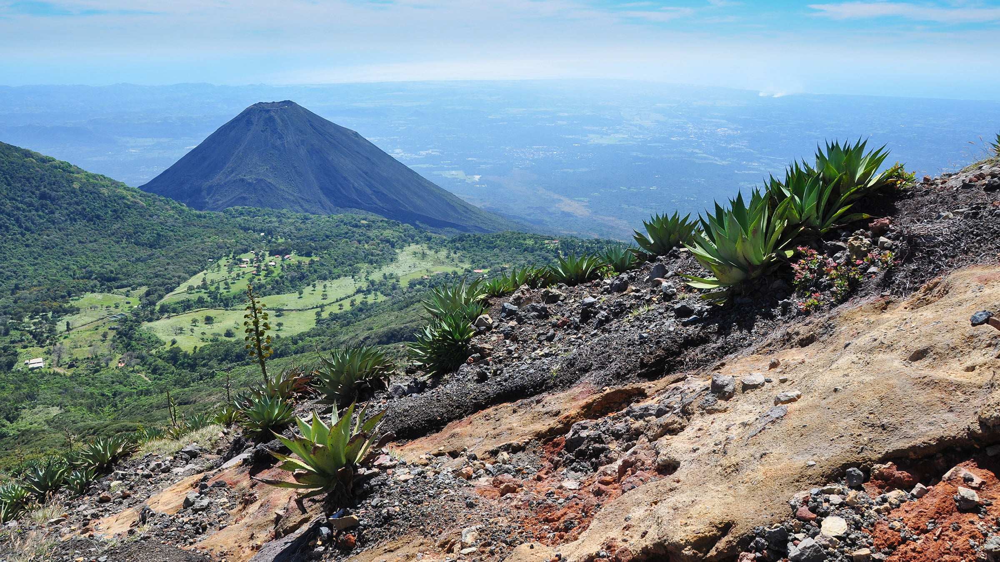

Volcanes que debes visitar en El Salvador
El Parque Nacional Los Volcanes es el área natural protegida en El Salvador que comprende tres de los 14 volcanes «geológicamente jóvenes» (entre 2 millones y 250 años, de acuerdo a los geólogos), de la Cordillera Apaneca-Ilamatepec: volcán de Santa Ana, Izalco y Cerro Verde, en los departamentos de Santa Ana y Sonsonate. Es llamado Complejo Los Volcanes por albergar a los tres grandes colosos, reconocidos cada uno por impresionantes momentos históricos de la vida salvadoreña.
